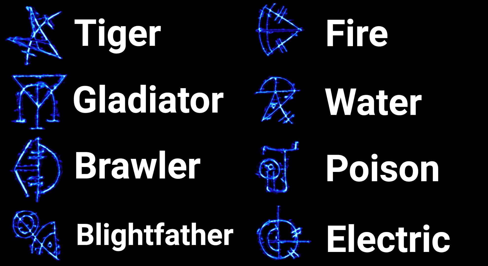

Easter Egg Song
Shoot 4 Coins
-Ra Tower: Between 2 Boxes (Down the Stairs and to the Left) (Bottom Floor)
-Danu Tower: Outside of Window on a Wooden Beam (Middle Floor)
-Odin Tower: Behind a Metal Gate on the Wall (Middle Floor)
-Zeus Tower: On the Base Plate of a Statue (Directly Straight Coming up the Stairs) (Top Floor)
Free Perk
Pick up the Parts and Place Them on the Skeleton on the Boat in the Odin Altar Room
-Helmet
-Odin Tower Entrance (Goes on The Skeleton's Skull)
-Sword
-The Crypts (Goes on The Skeleton's Torso)
-Cup
-Danu-Ra Temple Entrance (Goes in The Mouth of The Boat)
Throw a Wraith Fire Grenade between the 2 pillars in the Zeus Altar Room and Arc it so it lands on the Boat
7 Rounds After you Lit the Boat on Fire there will be a Free Perk Available to pick up next to the Boat
Fire Immunity
Kill all types of Elemental Catalyst Zombies and a Zombie Tiger with the Acid Trap
Slide under a Spike Log trap without Taking Damage
Once you take Damage from a Section of Fire you will be Immune to that Section of Fire
(You can do this for every Section of Fire on the Map)
Shield
Part 1
-Ra Tower
Part 2
-Zeus Tower
Part 3
-Odin Tower
Pack-A-Punch
Head to the Towers and Activate the Gongs
The Champion will, Kill them and Pick up their Head
Repeat this Process until you have 4 heads
Go to the Temple and Place the Heads on the Spike
Death of Orion
Open the Pack-A-Punch
Shoot the Bowl of Fire down a Long Hallway, Coming out of one of the big Pack-A-Punch Doors
Go to the Bridge connecting the Danu and Ra Towers, the Fire points to a Temple where the Statue Head is
-Ra Tower: Behind a Pyre in the Corner
-Danu Tower: Next to the 2 Trees in the Water
-Zeus Tower: In the corner of the Bloody Water
-Odin Tower: Underneath the Big Cauldron
Acid Trap
Part 1
-Center of Arena after a player has completed 3 Challenges
Part 2
-Temple
Part 3
-Temple
Buildable Locations
-Ra Tower Entrance: On the Wall
-Danu Tower Entrance: On the Wall
-Zeus Tower: On the Stairs
-Odin Tower: On the Stairs
Place the Statue Head on the Grate below the Trap, and Activate the Trap
Pick up the Skorpion Key from the Grate
Keep full Crowd Affinity for 2 rounds, then the crowd will throw you a Golden Cup, Pick it up
Go to Danu Tower: Bottom Floor, there is a Tree with a hole in it, Melee and Interact to Place the Cup
The Round after you have placed the Cup, It will be filled
Take the Cup to the side of the Mystery Box and you should be to Poison the Box
Pick up The Death of Orion
Main Quest
Complete the 4 Challenges
Danu's Challenge
Go to the Arena and Cut the Ropes on The Outside Walls
Finish 3 of them to get a Kettle to spawn Pick it up
Lure an Axe Gladiator Zombie to Throw Its Axe at a Pyre in the Arena, a Wooden Spike will fall off, Pick it up
Proceed to the Odin Tower Cauldron and Place the Spike on a Chain above the Cauldron
Wait for 2 or 3 Rounds, then Pick up the Charcoal
Go to the Arena and have someone get Negative Affinity
(The Fastest Way is to Run Through The Fire)
Eventually the Crowd will throw Poop at you, Pick it up
Go to the Pack-a-Punch temple and look for a Skull with a marking on its head
-Spawn 1: Under any of the Gold Symbols on the Wall
-Spawn 2: On this Pillar closer to the Center
-Spawn 3: On this Wall near the Stairs
Pull out your Specialist Weapon and it will fall on the ground, Pick it up
Find the Skull Grinder
-Spawn 1: In an Indent in the Wall in the Flooded Crypt
-Spawn 2: In the corner nestled amongst a group of Candles
-Spawn 3: On the opposite side of the Candles next to a Fire
(It can Spawn anywhere in the General Area)
Once you find the Grinder, put the Skull in it and Shoot it with a charged Death of Orion shot at least 3 times
The electricity will make the Grinder Crush the Skull into Goo
Take the Poop, Skull Goo and Charcoal to the bowl in Zeus's Bath House
Interact with The Bowl to mix all the ingredients together, It will take a few Rounds to finish
Once it Starts Smoking, Pick it up
Go to the Danu Tower: Bottom Floor and place the Fertilizer on the Ground between the Trees
Wait 2 to 3 rounds for it to Start Smoking
Get a Firebomb Kill Right on Top if it
Stand on the Fertilizer and Interact with it
(You may need to Pull out Your Special Weapon for the Teleportation to Trigger)
You'll arrive at an Unnamed Location with Red Hives on the Wall
You need to shoot them until they burst, then a Max Ammo will Spawn, Repeat this 3 Times
Ra's Challenge
You need to find 4 Bull Head Icons
-Spawn 1: In the Arena above the Gate
-Spawn 2: Across from you on the Bridge heading to Zeus's Tower
-Spawn 3: By some Hanging Leaves in The Odin-Zeus Temple Entrance, Take a left to exit Odin's Temple
-Spawn 4: Righthand spot in the Pit
-Spawn 5: Behind a notch in the Ra Tower Burial Chamber
-Spawn 6: In a doorway in The Danu Tunnel
-Spawn 7: Near a Wooden door in the Flooded Crypt
-Spawn 8: Behind this Barrier in the Danu Altar Room
Use the Brazen Bull to Light up the Icon, Killthe Gladiator that Spawns until you have 4 Souls in Ra's Statue
The Ra Statue will Shoot a Beam at the Obelisk, and You'll be Locked in The Temple
The Symbols on the Obelisk show the Order of Special Zombies that you must Kill
When you interact with the Obelisk, it will briefly show 4 symbols that correspond to Special Zombie Types
(You can kill Regular Zombies at any time, Special Zombies must be Killed in the Correct Order)
Kill the 4 Special Zombies, return to the Obelisk and Repeat
Zombie Symbols:

Zeus's Challenge
(You may need to approach the Central Pillar in the Arena to Teleport to the area with the Hooks)
You'sre looking for 4 Hook-Like Screws, Raise them to the surface by Shooting them
-Spawn 1: In the Cursed Room
-Spawn 2: In Danu Tunnel
-Spawn 3: In the Collapsed Tunnel
-Spawn 4: In Odin Tunnel
Go to the Central Platform in the Arena, You'll notice that the Symbols are illuminated
Get everyone to interact with it
Get Kilowatt on one of your Guns
Go to the Arena and Kill Zombies inside the Electric Circles with Kilowatt
The Rods will fill up with Souls, The electricity will Dissipate when you'sre done with the Circles
The Central Pillar will have 4 Electric balls on it, interact with them until all of the Balls turn Red
You'll be teleported to an Area where you have to Survive for about 90 Seconds
Odin's Challenge
You need to Electrify 3 groups of 3 Symbols using your Death of Orion/Serket's Kiss
You'll know You've done it right when the Symbols stay Lit
-Danu Tunnel
-The Crypts
-The Pit
Go to the Grate in the Pit to Trigger the Final Challenge
Kill the Zombies and pick up the Key from the Grate
Boss Fight
(Recommended Weapons: Hellion Salvo, Death of Orion, MOG 12, Hades)
(The Zombies will drop Max Ammos during the Boss Fight)
Go Through the Portal in the Arena to get Teleported to the Boss Arena
Kill the Zombies until the Boss Approaches
Go here to start the final boss battle
To Kill the Elephant you need to Destroy its Armor, then Shoot the Weak Spot is on Its Forehead
Eventually it will Die, another Elephant will spawn, Kill it with a Similar Strategy